Research
How will Artificial Intelligence impact politics? My dissertation investigates how economic shocks, especially those driven by automation and AI, alter public preferences for redistribution, regulation, and the welfare state. Some economic shocks provoke populist backlash; others are met with political stability.
I use experimental and cross‑national observational methods to examine when and why these divergent responses occur. Latin America, where welfare regimes vary widely and populist politics are deeply rooted, is a key region of comparison in my work and helps explain why similar shocks can produce support for either left‑ or right‑wing populists. By situating AI within a broader comparative agenda on the politics of economic disruption, I aim to help policymakers manage AI’s political impacts.
Dissertation Projects
Old Divides, New Technology: A Video Experiment on AI Framing and Policy Preferences (Working Paper) (PDF)
*Previously Titled “AI Winners vs. AI Losers: Experimental Evidence on Economic Risk & Policy Preferences”
Artificial Intelligence will transform labor markets by complementing some workers while displacing others. Using a preregistered video survey experiment (N=1,006) of U.S. white-collar workers, I examine how messaging about AI as either a job threat or productivity tool shapes policy preferences on redistribution and regulation. I find voters are more responsive to threat frames than optimism frames: AI job threat messaging lowers expected personal income and increases pessimism about aggregate employment. Notably, Democrats prove more receptive to optimism frames about AI complementarity, while Republicans respond more strongly to substitution threats. However, both groups revert to traditional partisan policy preferences on redistribution and regulation. When faced with AI threat frames, those with low AI knowledge, low AI self-efficacy, less education, or downward social mobility prefer “predistribution” in the form of AI regulation over wealth redistribution. Despite AI’s disruptive potential, voters’ responses to AI threats follow predictable partisan and class patterns, with the most vulnerable often preferring regulation over redistribution.
This study will be submitted for review at Political Behavior in October 2025.

The Welfare State, Immigration, and Explaining the Success of Left Populists
Electorates are sometimes in “populist moods,” but vary in whether they elect left‑wing or right‑wing populists. This chapter proposes that welfare state generosity moderates this variation. Unlike traditional left‑right divisions, both left and right populists defend the welfare state but in different ways.
- Left populists (e.g., Evo Morales) tend to advocate for protecting the welfare state from austerity.
- Right populists (e.g., Jair Bolsonaro, Geert Wilders) often adopt “welfare chauvinism,” arguing that immigrants put too much pressure on the welfare state.
Using data from the Centro de Estudios Distributivos, Laborales y Sociales (CEDLAS), the Comparative Welfare Entitlements Dataset (CWED), and the IMF Banking Crises Database, I empirically test Dani Rodrik’s theoretical assertion that the nature of a globalization shock interacts with welfare state generosity to shape populist outcomes.
For example, an immigration shock in a country with a generous welfare state should produce support for right‑populist welfare chauvinists, while a financial shock in a less generous state should produce support for left‑populists arguing to protect the welfare state from austerity.
Can Governments Buy Support for Automation?
Governments are often called upon to regulate automation, from California’s 2024 self‑driving truck ban to its 2025 AI regulations. This project asks whether welfare state generosity can reduce public support for automation‑related regulations by drawing on the embedded liberalism literature, which argues that governments can “buy” support for disruptive economic changes by expanding welfare spending.
This project tests whether embedded liberalism applies to white‑collar workers facing AI‑based automation and whether they will accept workplace transformation with little political consequence, or instead punish politicians who accept automation. Using cross‑national regression analysis with CEDLAS, the General Social Survey, and CWED, this chapter shows how welfare state scope predicts whether voters want to restrict automation and helps policymakers avoid repeating the embedded liberalism breakdown of the 2010s.